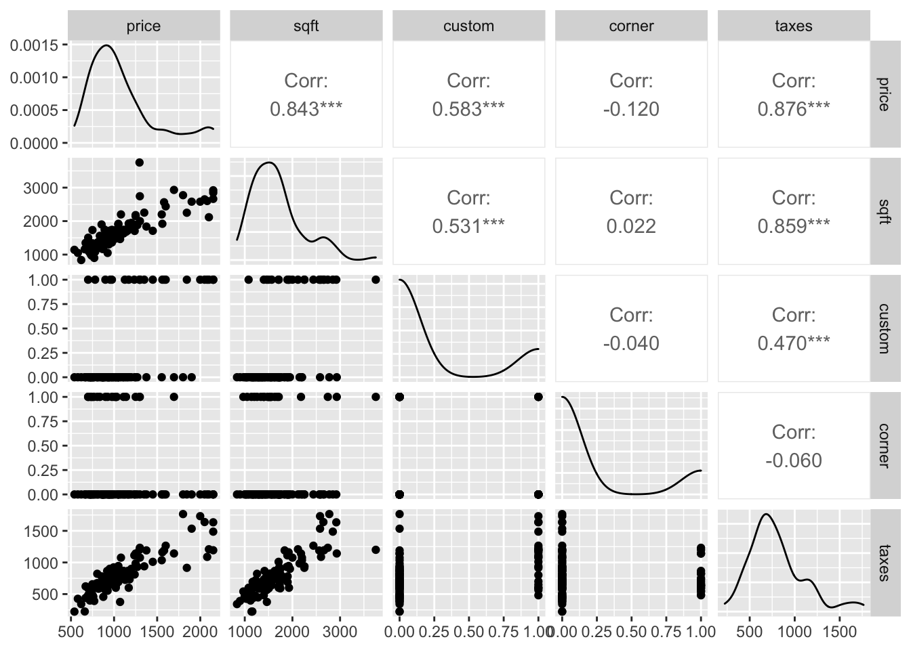

Tuesday, October 11, 2022
Assignment #4, Due October 13 at 6 p.m. posted on Canvas
Today
Bayesian data analysis
- Distributions as building blocks
- Bayesian computation
- Real world example from wildlife management
- Why use Bayesian models?
Distributions as building blocks
Bayesian methods are used in applications ranging from predicting elections to directing self-driving cars. They are particularly important in applications where uncertainty needs to be quantified, and where there are various sources of information available on the subject of interest.
Bayesian methods are not routinely taught in school. While there is an increasing number of excellent resources online, if you google “Bayesian” you get lots of links to philosophical discussions about subjective vs objective methods, discourses on the differences and relative merits of frequentist vs Bayesian methods, discussions on \(p\)-values vs subjective probabilities, etc.
With this introduction you will (1) be able to identify the important components of a Bayesian data analysis, and (2) be able to interpret and explain the components.
First you need to appreciate is the concept of a distribution and be familiar with common types of distributions. A distribution is like a Lego brick. It can be stacked together with other Lego bricks to create a large variety of models.
A distribution describes which values of a variable are common and which are less so. Averages taken from samples follow the bell-shaped normal distribution, for example. Two-thirds of all averages are within one standard deviations of the overall mean. Averages greater than three standard deviations from the mean are rare.
Formally, the normal distribution is defined by the following (probability) density function (pdf), where \(\mu\) is the population mean and \(\sigma^2\) is the variance. \[ f(y) = \frac{1}{\sigma \sqrt{2\pi}} e^{\frac{-(y-\mu)^2}{2\sigma^2}} \]
For any value \(y\), the equation tells you what the density value \(f(y)\) will be given \(\mu\) and \(\sigma\). Function values are largest when \(y\) is close to \(\mu\). Note: \(e\) is the base of the natural logarithm (2.71828…).
Fortunately you do not need to know this formula. You just need to understand its shape.
If a variable \(Y\) is described by a normal distribution, then you write: \[ Y \sim N(\mu, \sigma^2) \]
In particular, the normal distribution with \(\mu\) = 0 and \(\sigma\) = 1 is called the standard normal distribution, and is denoted as \(N(0,1)\). It’s shape is graphed as follows.
x <- seq(-5, 5, length = 101)
y <- dnorm(x, mean = 0, sd = 1)
df <- data.frame(x, y)
library(ggplot2)
( p <- ggplot(df, mapping = aes(x = x, y = y)) +
geom_line() )
Assume that test scores of an exam fit normal distributions. And that the mean test score is 72, and the standard deviation is 15.2. What is our best estimate for the percentage of all students that will score at least 84 on the exam?
Solution: You use the pnorm() function (density of the normal distribution) with argument mean equal to 72 and the argument standard deviation (sd) 15.2. Since you are looking for the percentage of students scoring AT LEAST 84, you are interested in the upper (right) tail of the normal distribution.
pnorm(q = 84,
mean = 72,
sd = 15.2,
lower.tail = FALSE)## [1] 0.2149176The percentage of all students scoring at least 84 on the exam will be 21.5%.
Effectively, the information contained in the sample of data is reduced to a distribution with only two parameters. This represents a model for the data.
If the mean or standard deviation are changed, the curve changes but it remains a normal distribution (shape remains the same).
y <- dnorm(x, mean = 1, sd = 1.5)
df2 <- data.frame(x, y)
p + geom_line(data = df2,
mapping = aes(x = x, y = y), color = "blue")
The two curves on the plot are members of a distributional family all having the same shape.
The uniform distribution is one in which all intervals of the same width are equally likely. It has two parameters \(a\), \(b\) where \(a\) < \(b\) defining the end points.
runif(n = 10, min = 1, max = 3)## [1] 1.522263 2.466030 1.882633 2.675937 1.693433 2.458071 1.125551 2.874510
## [9] 1.055481 2.999162The shape is described as flat.
x <- seq(1, 3, length = 101)
y <- dunif(x, min = 1, max = 3)
df <- data.frame(x, y)
ggplot(data = df, mapping = aes(x = x, y = y)) +
geom_line() +
scale_y_continuous(limits = c(0, 1))
The uniform distribution implies that all values are equally likely to occur. This contrasts with the normal distribution where values near the mean are more likely than those farther from it.
The uniform distribution used in the Bayesian context describes the situation in which you are maximally ‘non-committed.’ In other words, there is no reason to prefer one value over another between the minimum and the maximum.
Think of voters who are not committed to either candidate A or B. If these are the only two choices then maximally non-committed implies that they are just as likely to vote for A as they are to vote for B. Now imagine an infinite number of candidates. Then you have a uniform distribution.
A parametric model, like the uniform or Gaussian, is a family of distributions described using just a few parameters. Key idea: Bayesian models are built from parametric models.
Bayesian computation
Bayesian models are ‘generative.’ If you know the parameters then you can generate data: Parameters (\(\mu\), \(\theta\), \(\sigma\)) –> generative model –> data (5, 3, 4, 0, 1, …): Going from parameters to data is called Monte Carlo simulation.
Example: If you assume that the rate of hurricanes in the United States is 1.7 hurricanes/year (\(\lambda\)) and you assume the generative model is the Poisson distribution then you generate data using
rpois(n = 100, lambda = 1.7)## [1] 0 0 5 1 5 1 2 1 2 2 1 2 0 1 2 1 2 2 1 3 3 2 3 2 3 5 1 0 1 2 2 2 2 1 4 5 3
## [38] 2 2 1 2 2 1 2 1 2 0 2 1 1 1 2 1 1 2 4 1 1 0 1 2 1 2 1 2 2 0 3 0 1 3 2 2 2
## [75] 0 2 4 2 0 3 2 0 1 0 3 2 0 1 1 2 1 4 4 2 1 2 2 2 4 0Alternatively if you assume the rate of hurricanes is described by a gamma distribution with shape parameter = 3.5 and scale parameter = .5 then you generate data using
lambda <- rgamma(n = 100, shape = 3.5, scale = .5)
rpois(n = 100, lambda = lambda)## [1] 3 2 0 3 2 2 1 1 1 3 2 2 3 1 0 3 1 2 2 0 0 2 5 1 0 0 3 0 3 1 2 3 0 2 1 0 0
## [38] 0 0 2 0 4 1 3 1 0 0 0 0 2 1 2 2 0 1 2 4 3 1 1 0 0 0 2 3 1 1 7 1 2 1 1 0 2
## [75] 3 1 1 1 0 0 0 8 0 1 0 2 0 0 2 3 3 2 1 3 1 2 0 5 1 1In this case you first generate a bunch of \(\lambda\)s from a gamma distribution and then for each \(\lambda\) you generate a count.
If you know the data then you can estimate the parameters: data (5, 3, 4, 0, 1, …) –> generative model –> Parameters (\(\mu\), \(\theta\), \(\sigma\)): Going from data to parameters is called Bayesian data analysis.
Example: How many blue marbles?
Consider an example from Statistical Rethinking (McElreth 2016). You have a bag containing four marbles. Each marble is either blue (B) or white (W). You don’t know how many blue marbles are in the bag.
It could be either 0, 1, 2, 3, or 4. Only five possibilities. It can’t be 5, 6, or 3.2.
Your goal is to figure out the likely number of blue marbles given the evidence (data). What is the likely number before you have further evidence?
You gather evidence (collect data) by drawing a sequence of three marbles. The marbles are pulled from the bag, one at a time, then returned to the bag, and the bag is shaken before drawing another.
Say you draw the sequence [B W B]. How many ways are their to produce this draw?
If you conjecture that the bag contains 0 blue marbles, then how many ways could you have gotten [B W B]? Simple: zero.
If you conjecture that the bag contains 1 blue and 3 white marbles (B W W W) then how many ways could you have gotten [B W B]? Starting from left to right in our sequence [B W B] you see there is only 1 way to get a blue, 3 ways to get a white, and again only 1 way to get a blue. You multiply these ways together 1 x 3 x 1 = 3 to get the total number of ways to get [B W B] GIVEN that the bag contains one blue and four white marbles (B W W W).
If you conjecture that the bag contains 2 blue and 2 white marbles (B B W W) then how many ways could you have gotten [B W B]? Starting from left to right in our sequence [B W B] you see there is 2 ways to get a blue, 2 ways to get a white, and again 2 ways to get a blue. You multiply these ways together 2 x 2 x 2 = 8 to get the total number of ways to get [B W B] GIVEN that the bag contains two blue and two white marbles (B B W W).
Here is the full table of ways to produce that draw given each possible bag composition.
| conjecture | ways to produce [B W B] |
|---|---|
| (W W W W) | 0 x 4 x 0 = 0 |
| (B W W W) | 1 x 3 x 1 = 3 |
| (B B W W) | 2 x 2 x 2 = 8 |
| (B B B W) | 3 x 1 x 3 = 9 |
| (B B B B) | 4 x 0 x 4 = 0 |
So what is the most likely number of blue marbles now?
What happens when you draw another marble? You update the counts. How? You multiply the prior counts by the new count. The old counts act as your prior counts.
Here is an example after drawing an additional blue marble [B].
| conjecture | ways to produce [B] | previous counts | new count |
|---|---|---|---|
| (W W W W) | 0 | 0 | 0 x 0 = 0 |
| (B W W W) | 1 | 3 | 1 x 3 = 3 |
| (B B W W) | 2 | 8 | 2 x 8 = 16 |
| (B B B W) | 3 | 9 | 3 x 9 = 27 |
| (B B B B) | 4 | 0 | 0 x 4 = 0 |
Now, out of the five possibilities concerning the frequency of blue and white marbles in the bag, the conjecture of three blues and one white has pulled further into the lead.
Logically, what you have done is expressed as: Plausibility of (B W W W) after seeing [B] is proportional to the ways (B W W W) can produce [B] X prior plausibility of (B W W W).
But these are just counts and plausibilities; you want probabilities. To make this change first let’s define \(p\) as proportion of blue marbles in the bag and \(D_{new}\) as the data.
You now have: Plausibility of \(p\) after \(D_{new}\) is proportional to the ways \(p\) can produce \(D_{new}\) X prior plausibility of \(p\).
You standardize the plausibility so that the sum of the plausibilities over all conjectures equals one. To standardize, you add all the ways to produce [B W B], one for each \(p\), then divide each way by this sum.
For example there is three ways to produce [B W B] if the bag contains (B W W W), eights ways to produce [B W B] if the bag contains (B B W W) and nine ways to produce [B W B] if the bag contains (B B B W) 3 + 8 + 9 = 20. 3/20 = .15, 8/20 = .4, and 9/20 = .45.
| possible combinations | \(p\) | ways to produce data | probability |
|---|---|---|---|
| (W W W W) | 0 | 0 | 0 |
| (B W W W) | .25 | 3 | .15 |
| (B B W W) | .5 | 8 | .40 |
| (B B B W) | .75 | 9 | .45 |
| (B B B B) | 1 | 0 | 0 |
This process is equivalent to: Plausibility of \(p\) after new data \(D_{new}\) = (ways \(p\) can produce \(D_{new}\) X prior plausibility \(p\)) / sum of plausibilities.
All these calculations correspond to quantities in applied probability theory.
- The conjectured proportion of blue marbles, \(p\), is called a parameter.
- The relative number of ways that \(p\) can produce the data is called the likelihood.
- The prior plausibility of a specific \(p\) is called the prior probability.
- The updated plausibility of any specific \(p\) is called the posterior probability.
Example: What percentage of the globe is covered by water?
Imagine a globe of the world. You want to know how much of the globe is water. Your strategy is to throw the globe up, catch it, and note the surface (water or land) under the right index finger. Suppose you do this globe tossing 9 times.
d <- data.frame(toss = c("w", "l", "w", "w", "w", "l", "w", "l", "w"))On the first toss your finger touches water, on the next toss it touches land, etc.
You then rephrase in terms of trials and the cumulative counts of water which you denote as the number of success (n_success).
( d <- d |>
dplyr::mutate(n_trials = 1:9,
n_success = cumsum(toss == "w")) )## toss n_trials n_success
## 1 w 1 1
## 2 l 2 1
## 3 w 3 2
## 4 w 4 3
## 5 w 5 4
## 6 l 6 4
## 7 w 7 5
## 8 l 8 5
## 9 w 9 6To get the logic machine started you need to make assumptions. These assumptions constitute the model. An ideal loop for designing a Bayesian model has three steps
- Data story
- Describe aspects of the underlying reality as well as the sampling process.
- Then translate into a formal probability model.
Framework for interpretation. Helps with finding additional questions that must be answered because hypotheses are often vague.
- Update
- Bayesian models begin with a set of plausibilities assigned to each possibility called the prior.
- Update those plausibilities based on the data to give posterior plausibility.
- Evaluate
- Certainty is no guarantee that the model is good or accurate.
- Critique the model.
- Check model’s adequacy for some purpose, or in light of stuff you don’t know.
How did the data come to be? Describe aspects of the underlying reality as well as the sampling process, sufficient enough for specifying an algorithm to simulate new data. Write out the data story for this activity.
A Bayesian model begins with one set of plausibilities assigned to each possible result, the prior plausibilities. These values are then updated in light of data to produce posterior plausibilities. This process is called Bayesian updating.
Here is the code for our proportion of water example.
sequence_length <- 50 # how many points to calculate probability for
d |>
tidyr::expand(n_trials,
p_water = seq(from = 0, to = 1, length.out = sequence_length)) |>
dplyr::left_join(d, by = "n_trials") |>
dplyr::group_by(p_water) |>
# lag is the *previous* value
dplyr::mutate(lagged_n_success = dplyr::lag(n_success, k = 1),
lagged_n_trials = dplyr::lag(n_trials, k = 1)) |>
# if first time, flat prior.
# otherwise use previous posterior as new prior.
dplyr::ungroup() |>
dplyr::mutate(prior = ifelse(n_trials == 1,
.5,
dbinom(x = lagged_n_success,
size = lagged_n_trials,
prob = p_water)),
strip = stringr::str_c("n = ", n_trials), # which draw is it?
likelihood = dbinom(x = n_success,
size = n_trials,
prob = p_water)) |> # calculate likelihood for current draw
# normalize the prior and the likelihood, making them probabilities
dplyr::group_by(n_trials) |>
dplyr::mutate(prior = prior / sum(prior),
likelihood = likelihood / sum(likelihood)) |>
ggplot(mapping = aes(x = p_water)) +
geom_line(mapping = aes(y = prior), linetype = 2) +
geom_line(mapping = aes(y = likelihood)) +
scale_x_continuous("proportion water", breaks = c(0, .5, 1)) +
scale_y_continuous("probability", breaks = NULL) +
facet_wrap(~strip, scales = "free_y") +
theme_minimal()
Look at the upper left panel. The dashed horizontal line is your prior probability before gathering any data. It codifies your lack of knowledge about the proportion of water by stating that it is equally likely to be any proportion (value between 0 and 1).
The solid line indicates the probabilities after you observe ‘water’ (“w”) on our first trial (n = 1). The highest probability is that the entire globe is water and the lowest probability (0) is that there is no water so the line slopes from lower left to upper right.
The next panel (n = 2) shows what happens to this diagonal line (now shown as dashed because it is now the prior) after you observe ‘land’ (“l”) on your second trial. The highest probability is now .5 with lowest probabilities (0) for both the case of no water and no land. In the next panel (n = 3) you see that the probability distribution shifts again after observing ‘water’ on your third trial.
As more and more data are collected the difference between the prior (previous) and posterior (current) diminishes. Note that these Bayesian estimates are valid and can be interpreted for any sample size. This is in contrast to interpretations around a minimum number of samples in non-Bayesian contexts. In non-Bayesian contexts, statistical inference is justified by behavior at large samples sizes (this is called ‘asymptotic behavior’).
You get answers by counting things rather than by solving equations.
Real world example from wildlife management
A common problem in wildlife management is the estimation of a species abundance. For example: Start by catching and marking 20 fish. Then after some time catch another 20 fish and count how many of them have a mark. Suppose that out of the 20 fish caught 5 are marked. How many fish are in the lake?
Parameter = Number of fish in the lake (the unknown that you want to estimate) Generative Model: First mark 20 fish and release them back into the lake, then recapture 20 fish and count how many are marked.
Data: Five of the 20 fish were marked.
Here is what you will do to answer the question how many fish are in the lake.
- Draw a random sample from the prior distribution on the parameter.
- Plug in each sampled value (draw) into the generative model to get a vector of ‘fake’ data. For example: If the number of fish in the lake is 80 you might get four marked fish on our recapture sample. If the number of fish is only 30, you might get 13 marked fish on our sample, etc. That makes sense, right?
- Keep only those parameter values that generated the data that was actually observed (5 out of the 20 sampled).
Let’s see this in action with code. Draw a large (M = 100000) sample from the prior distribution (discrete uniform) on the parameter representing the number of fish in the lake (priorNF). Here you use the sample() function on a vector of counts between 21 and 250.
M <- 100000
priorNF <- sample(21:250, size = M, replace = TRUE)
head(priorNF, n = 20)## [1] 48 221 84 76 112 249 209 126 115 162 230 137 164 143 87 47 210 88 168
## [20] 135The result is a vector of length M containing counts with values between 21 and 250. What is the shape on the distribution of values?
head(table(priorNF))## priorNF
## 21 22 23 24 25 26
## 465 451 438 423 431 440tail(table(priorNF))## priorNF
## 245 246 247 248 249 250
## 404 414 424 433 425 431Plot a histogram of the parameter values.
library(ggplot2)
ggplot(data = as.data.frame(priorNF),
mapping = aes(priorNF)) +
geom_histogram(binwidth = 10, boundary = 20,
color = "white", fill = "salmon") +
xlab("Number of Fish in the Lake") +
ggtitle(label = "Prior distribution on the number of fish in the lake") +
theme_minimal()
Uniform distribution. This is how you should start if you have no knowledge about how many fish are in the lake. You are maximally non-committal to any particular count.
Next you define the generative model. Here you create a function that takes a value for the unknown parameter (number of fish in the lake) as input and returns a data value. The data value is the number of tagged fish on recapture.
Suppose for example that the number of fish in the lake is in fact 63. Then you set up a vector of length 63 where 20 are labeled as marked and 63 - 20 = 43 are labeled as not marked.
fish <- rep(0:1, c(63 - 20, 20))
fish## [1] 0 0 0 0 0 0 0 0 0 0 0 0 0 0 0 0 0 0 0 0 0 0 0 0 0 0 0 0 0 0 0 0 0 0 0 0 0 0
## [39] 0 0 0 0 0 1 1 1 1 1 1 1 1 1 1 1 1 1 1 1 1 1 1 1 1Then you take a sample of size 20 without replacement (this is equivalent to catching 20 fish in a lake with 63 fish of which twenty of them are marked) from this vector and add the sampled values. This value represents the number of fish caught that were marked.
sum(sample(fish, size = 20))## [1] 8Sample and sum again.
Let’s save 1000 of these and then make a histogram. The for(){} function is used to create a loop over this process of sampling and summing. Here it says to repeat the sample and sum 1000 times. j is used as a ‘dummy’ indexing the set of integers between 1 and 1000. Each time you get a sum nM you include it as an element in the vector nMarked.
nMarked <- numeric()
for(j in 1:1000){
nM <- sum(sample(fish, 20))
nMarked <- c(nMarked, nM)
}
ggplot(data = as.data.frame(nMarked),
mapping = aes(nMarked)) +
geom_histogram(breaks = seq(-.5, 12.5, 1),
color = "white", fill = "salmon") +
xlab("Number of Recaptured Fish") +
ggtitle(label = "Conditional likelihood on the number of recaptured fish") +
theme_minimal()
This tells us that IF the number of fish in the lake is 63, the most likely number of marked recaptures would be either 6 or 7.
But what if the number of fish in the lake is 64 or 74, or any other number? That is exactly what you want to estimate. So you create a function from your sampling code.
pickFish <- function(priorNF){
fish <- rep(0:1, c(priorNF - 20, 20))
sum(sample(fish, 20))
}The function() function takes as it’s single input the prior guess at the number of fish in the lake. The two lines of code between the left { and the right } samples and sums. The only thing returned by the function is the number of marked fish on recapture. The function is assigned to the object you call pickFish().
To apply the function include a guess at the number of fish in the lake.
pickFish(104)## [1] 7pickFish(priorNF[10])## [1] 3Now you can simulate the data. The data are the number of marked fish on the recapture given a parameter value. The parameter values come from the prior distribution. You start by ‘initializing’ the object nMarked.
nMarked <- NULL
for(i in 1:M) {
nMarked[i] <- pickFish(priorNF[i])
}
head(nMarked)## [1] 11 3 5 6 4 2The for loop uses the pickFish() function for each count in the prior and there are M of them. The output of applying the function is saved, element by element, in the vector nMarked.
Finally, you keep only those parameter values that resulted in the data you actually observed (5 marked fish re-caught) and plot those as a histogram.
postNF <- priorNF[nMarked == 5]
ggplot(data = as.data.frame(postNF),
mapping = aes(postNF)) +
geom_histogram(binwidth = 10, boundary = 20,
color = "white", fill = "salmon") +
xlab("Number of Fish in the Lake") +
ggtitle(label = "Posterior distribution on the number of fish in the lake") +
theme_minimal()
The result is a distribution on the unknown parameter (number of fish in the lake). It is called the posterior distribution. It shows us how many times the particular value of number of fish in the lake results in 5 out of 20 marked on recapture.
It tells us that it is unlikely there are more than 200 or less than 50 fish in the lake.
For insight, put the prior and posterior values into a data frame.
df <- data.frame(Distribution = rep(c("(A) Prior Distribution",
"(B) Posterior Distribution"),
c(M, length(postNF))),
Values = c(priorNF, postNF))
head(df)## Distribution Values
## 1 (A) Prior Distribution 48
## 2 (A) Prior Distribution 221
## 3 (A) Prior Distribution 84
## 4 (A) Prior Distribution 76
## 5 (A) Prior Distribution 112
## 6 (A) Prior Distribution 249tail(df)## Distribution Values
## 108142 (B) Posterior Distribution 97
## 108143 (B) Posterior Distribution 191
## 108144 (B) Posterior Distribution 72
## 108145 (B) Posterior Distribution 76
## 108146 (B) Posterior Distribution 147
## 108147 (B) Posterior Distribution 92Then plot the prior and posterior distributions side by side.
ggplot(data = df,
mapping = aes(x = Values)) +
geom_histogram(aes(y = (..density..) * 20),
binwidth = 10, color = "white",
fill = "salmon") +
scale_x_continuous(limits = c(20, 250)) +
facet_wrap(~ Distribution, ncol = 1) +
xlab("Number of Fish in the Lake") +
ylab("Probability") +
ggtitle(label = "How many fish are there in the lake?") +
theme_minimal()## Warning: Removed 4 rows containing missing values (geom_bar).
As an answer to the question how many fish are in the lake, you start by thinking that there is no preference for any number between 20 and 250. That uniform uncertainty is the prior. It is quantified as a uniform distribution.
Then, after collecting data and combining the information with the prior, the uncertainty is reduced. The reduction in uncertainty is seen in the posterior distribution.
The most likely value for the number of fish in the lake is somewhere between 70 and 120 as seen by location of the tallest bar in the histogram. There is a 50% chance that the number of fish in the lake is between 78 and 132. This is obtained by using the quantile() function on the posterior values stored in postNF.
quantile(postNF, probs = c(.25, .75))## 25% 75%
## 77 132If you want to be 95% certain of the correct answer to the question then you increase the interval to
quantile(postNF, probs = c(.025, .975))## 2.5% 97.5%
## 54 219If you need to make a single best guess you take the median of the posterior.
median(postNF)## [1] 100Let’s look at the bars centered on the value of 100 fish. You start with the prior. The probability that there are 100 fish (more precisely between 90 & 110 fish) in the lake before you mark and recapture is .09 (9%). You write this as
P(100 fish) = 9%
After observing 5 marked fish in 20 on the recapture the probability increases to 20%. You write this as
P(100 fish | 5 marked recaptured) = 20%
Combining the prior with data results in the posterior. P(\(\theta\) | D) \(\propto\) P(\(\theta\)) \(\times\) P(D | \(\theta\)): Bayes Theorem.
In this example you used a capture-recapture model with one parameter. But the general method works on any generative model and with any number of parameters.
The specific computational method (approximate Bayes calculation: ABC) you used only works in rare cases.
Why use Bayesian models?
You can build more flexible models. You can use models to answer specific questions in a natural way. For example, what is the probability that the number of fish in the lake exceeds 200?
sum(postNF > 200)/length(postNF) * 100## [1] 4.602921Less the 5% chance. Note: There is no reference null hypothesis or \(p\)-value.
Suppose you get some additional data. Let’s say you catch another sample of fish from the lake and find that 6 are marked. You can use your posterior distribution as the new prior distribution.
nMarked <- NULL
for(i in 1:length(postNF)) {
nMarked[i] <- pickFish(postNF[i])
}
post2NF <- postNF[nMarked == 6]Again put the prior and posterior in a single data frame and plot.
df <- data.frame(Distribution = rep(c("(A) Prior Distribution", "(B) Posterior Distribution"),
c(length(postNF), length(post2NF))),
Values = c(postNF, post2NF))
ggplot(data = df,
mapping = aes(x = Values)) +
geom_histogram(aes(y = (..density..) * 20),
binwidth = 10, color = "white",
fill = "salmon") +
scale_x_continuous(limits = c(20, 250)) +
facet_wrap(~ Distribution, ncol = 1) +
xlab("Number of Fish in the Lake") +
ylab("Probability") +
ggtitle(label = "How many fish are there in the lake?") +
theme_minimal()## Warning: Removed 4 rows containing missing values (geom_bar).
The new data pushes the posterior median toward a lower count relative to the posterior median from the original model. It also considerably reduces the uncertainty. Given this model, the probability that there are more than 200 fish in the lake is about .1%, down from 5%.
median(post2NF)## [1] 79sum(post2NF > 200)/length(post2NF) * 100## [1] 0